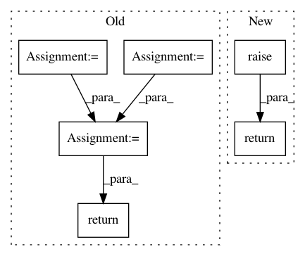

37177ecd552cc8cc30586a1a041eddcc4b2a9841,skbio/util/_decorator.py,classonlymethod,__get__,#classonlymethod#,347
Before Change
" "%s.%s" instead."
% (cls.__name__, self.__func__.__name__))
evaldict = self.__func__.__globals__.copy()
evaldict["_call_"] = self.__func__
evaldict["_cls_"] = cls
fun = FunctionMakerDropFirstArg.create(
self.__func__, "return _call_(_cls_, %(shortsignature)s)",
evaldict, __wrapped__=self.__func__)
fun.__func__ = self.__func__ // Doctests need the orginal function
return fun
class FunctionMakerDropFirstArg(decorator.FunctionMaker):
def __init__(self, *args, **kwargs):
After Change
raise TypeError("Class-only method called on an instance. Use"
" "%s.%s" instead."
% (cls.__name__, self.__func__.__name__))
return super().__get__(obj, cls)
In pattern: SUPERPATTERN
Frequency: 3
Non-data size: 6
Instances
Project Name: biocore/scikit-bio
Commit Name: 37177ecd552cc8cc30586a1a041eddcc4b2a9841
Time: 2016-06-24
Author: ebolyen@gmail.com
File Name: skbio/util/_decorator.py
Class Name: classonlymethod
Method Name: __get__
Project Name: biocore/scikit-bio
Commit Name: 5da3b4a48dcc59e65d3b7c99bd9b4d284bef1ed5
Time: 2016-07-21
Author: ebolyen@gmail.com
File Name: skbio/util/_decorator.py
Class Name: classonlymethod
Method Name: __get__
Project Name: PIQuIL/QuCumber
Commit Name: d2c42398e842332d7f03c93243b9bc563127fb4f
Time: 2019-12-10
Author: emerali@users.noreply.github.com
File Name: qucumber/nn_states/complex_wavefunction.py
Class Name: ComplexWaveFunction
Method Name: psi